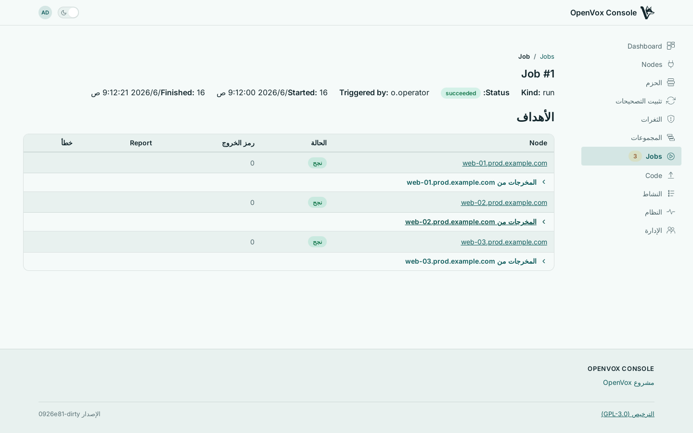

الاستخدام
تشغيل الـ Jobs
شغّل Puppet أو Task من Puppet عند الطلب على Node واحد، أو مجموعة مختارة، أو الـ Nodes التي يطابقها استعلام، أو مجموعة Nodes، وانظر ما فعله كل Node.
تستطيع وحدة التحكم تشغيل Puppet على الـ Nodes الآن، بدل انتظار التشغيل المجدول التالي، وتشغيل Tasks الخاصة بـ Puppet التي يحتويها الكود الذي جرى له deploy. وكل طلب Job، يُسجَّل مع كل Node استهدفه وما حدث على كلٍّ منها.
يتطلب بدء Job الإذن orchestrator:run؛ وتتطلب رؤية الـ Jobs الإذن orchestrator:read. ويجب أن يكون الـ Node متصلًا ليمكن الوصول إليه: راجع إضافة Nodes.
إذا كان دورك ممنوحًا على مجموعات Nodes معيّنة، فلا يمكنك بدء Jobs إلا على الـ Nodes الموجودة في تلك المجموعات، ولا ترى إلا الـ Jobs الخاصة بها. والـ Job الذي يذكر Node خارجها يُرفض بكامله - فلا يُنفَّذ شيء على الـ Nodes الأخرى أيضًا - وتذكر وحدة التحكم الـ Nodes التي يجب استبعادها. راجع المستخدمون والأدوار والرموز.
لتنفيذ عدة تشغيلات وTasks بالترتيب، راجع تشغيل الـ Plans. ولبدء Job لاحقًا، أو بشكل متكرر، راجع جدولة الـ Jobs.
تنفيذ Puppet
من أي مكان تعرض فيه الـ Nodes التي تريدها:
- Node واحد: في صفحة الـ Node، نفّذ Puppet.
- مجموعة مختارة: في صفحة Nodes، حدّد الـ Nodes، ثم نفّذ Puppet على المحدَّد.
- كل Node تطابقه مجموعة: في صفحة المجموعة، نفّذ Puppet على الـ Nodes المطابقة لها.
يفتح كلٌّ منها مربع حوار يذكر الـ Nodes. أكّده لبدء Job، تنتقل إليه.
أو ابدأ من صفحة Jobs، حيث يتيح لك تنفيذ Puppet وتنفيذ Task تحديد الـ Nodes: راجع اختيار الـ Nodes.
خيارات التشغيل
يعرض مربع الحوار ثلاثة خيارات. وإن لم يُختر أيٌّ منها، فالتشغيل عادي.
- يُبلّغ No-op عمّا سيغيّره التشغيل ولا يغيّر شيئًا. ويعرض الـ Job القائمة لكل Node.
- يسجّل مخرجات تصحيح الأخطاء سجل تصحيح الأخطاء الخاص بـ Puppet لكل Node في الـ Job.
- يطلب Environment من الـ Node أن يعمل على ذلك الـ Environment، لتجربة Node على فرع ما.
الـ Environment طلب، لا تجاوز. فحين تضبط مجموعات الـ Nodes الخاصة بـ Node ما Environment، يستخدمه Puppet أيًّا كان ما يطلبه التشغيل. ويَسِم الـ Job كل Node عمل في Environment مختلف عن المطلوب، بمجرد وصول الـ Report الخاص بالـ Node.
التشغيل بخيارات يسجّل ما طبعه Puppet. افتح المخرجات تحت سطر الـ Node في الـ Job لقراءته. وتُقتطع المخرجات الطويلة عند 256 KB، مع الإشارة إلى ذلك.
تحتاج خيارات التشغيل إلى عميل وكيل Node من هذا الإصدار من وحدة التحكم أو أحدث. فالعميل الأقدم يرفض الطلب، ويفشل سطر الـ Node مع ذكر أن العميل أقدم مما ينبغي. ولا يُشغَّل Puppet على ذلك الـ Node إطلاقًا، فلا يُنفَّذ طلب no-op أبدًا كتشغيل حقيقي. رقِّ العميل - راجع إبقاء وكلاء الـ Nodes محدَّثين - وشغّل مجددًا. والتشغيل دون خيارات يعمل على كل إصدارات العميل.
عبر الـ API، برمز وصول:
curl -X POST https://console.example.com/api/v1/orchestrator/runs \
-H "Authorization: Bearer <access token>" \
-H 'Content-Type: application/json' \
-d '{"targets":["web01.example.com","web02.example.com"]}'
أضف options لتشغيل بخيارات. ويجوز حذف أيٍّ من الثلاثة:
-d '{"targets":["web01.example.com"],
"options":{"noop":true,"environment":"feature_x","debug":true}}'
يُرفض الطلب، ولا يُنشأ أي Job، إذا كان اسم الـ Environment غير صالح، أو لم يكن لدى openvoxserver مثل هذا الـ Environment، أو إذا ذكر خيارًا لا تعرفه وحدة التحكم.
اختيار الـ Nodes
يسأل تنفيذ Puppet وتنفيذ Task في صفحة Jobs عن الـ Nodes التي سيُنفَّذ عليها، بإحدى ثلاث طرق:
-
قائمة Nodes: الـ certnames، واحد في كل سطر.
-
استعلام: استعلام PQL يُرجع
certname. تشغّله وحدة التحكم على openvoxdb عند بدء الـ Job، ويعمل الـ Job على الـ Nodes التي يُرجعها:inventory[certname] { facts.os.family = "Debian" and facts.os.release.major = "12" } -
مجموعة Nodes: الـ Nodes الموجودة في المجموعة عند بدء الـ Job.
يعرض معاينة الـ Nodes الـ Nodes التي يعنيها اختيارك في هذه اللحظة. ويعرضها لك مربع الحوار دائمًا قبل أن يبدأ أي شيء: فاختيار تنفيذ في المرة الأولى يشغّل المعاينة، وفي المرة الثانية يبدأ الـ Job. والاستعلام أو المجموعة التي لا تطابق أي Nodes لا تبدأ شيئًا.
يجب أن يكون الاستعلام بصياغة PQL نفسها وأن يُرجع certname. والاستعلام الذي لا تستطيع وحدة التحكم أو openvoxdb استخدامه يُرفض مع ذكر السبب، وهو في حالة الخطأ النحوي رسالة openvoxdb نفسها التي تشير إلى موضع الخطأ.
إذا كان دورك ممنوحًا على مجموعات Nodes معيّنة، فإن الاستعلام أو المجموعة يعطيك الـ Nodes المطابقة الموجودة في مجموعاتك أنت، ولا يقول شيئًا عن غيرها. ولا يمكن أيضًا أن يحتوي استعلامك على استعلام فرعي - أقواس كيان داخل أقواس كيان آخر - لأن مثل هذا الاستعلام قد يُستخدم لمعرفة Nodes لا تستطيع رؤيتها. استعلم عن كيان واحد، كما في المثال أعلاه؛ إذ يصل inventory إلى كل Fact وكل Fact موثوق للـ Node. أما الـ Nodes التي تذكرها في قائمة فتظل كلها أو لا شيء.
عبر الـ API، أعطِ query أو group (معرّف مجموعة Nodes) بدل targets:
curl -X POST https://console.example.com/api/v1/orchestrator/runs \
-H "Authorization: Bearer <access token>" \
-H 'Content-Type: application/json' \
-d '{"query":"inventory[certname] { facts.os.family = \"Debian\" }",
"options":{"noop":true}}'
يأخذ POST /api/v1/orchestrator/targets/resolve الحقول نفسها targets أو query أو group ويجيب بالـ Nodes، دون أن يبدأ أي شيء.
تنفيذ Task
الـ Task سكربت يُوزَّع في المجلد tasks الخاص بوحدة، مع ملف بيانات وصفية يصف معاملاته. تشغّل وحدة التحكم الـ Tasks الموجودة في الكود الذي نفّذت له deploy - راجع deploy الكود - فلا يوجد ما يُثبَّت من أجل Task سوى deploy الوحدة التي تحتويها.
تُتاح الـ Tasks في الأماكن نفسها التي تُتاح فيها تشغيلات Puppet: تنفيذ Task في صفحة الـ Node، وعلى المحدَّد في صفحة Nodes، وعلى الـ Nodes المطابقة لمجموعة، وفي صفحة Jobs. في مربع الحوار:
- اختر الـ Environment الذي تؤخذ منه الـ Task. تُقرأ الـ Tasks من كود ذلك الـ Environment كما هو منشور الآن.
- اختر الـ Task. يظهر تحتها وصفها، وحقل لكل معامل. الحقل الموسوم بـ
*مطلوب؛ والحقل المتروك فارغًا يأخذ القيمة الافتراضية التي تصرّح بها بياناتها الوصفية. - اختياريًا، اضبط المهلة. والـ Task التي لا تزال تعمل حين تنقضي المهلة تُوقف، مع كل ما بدأته، ويُبلَّغ عنها بأن مهلتها انقضت. وهي 30 دقيقة ما لم تحدد غير ذلك، و55 على الأكثر.
- تنفيذ Task يبدأ الـ Job وينقلك إليه.
تفحص وحدة التحكم المعاملات مقابل البيانات الوصفية للـ Task قبل أن تبدأ أي شيء، وتَسِم كل حقل ترفضه بالسبب. ولا يُنشأ أي Job حتى تصبح صحيحة.
يمكن قصر الدور على بعض الـ Tasks، وعندئذ لا تعرض قائمة Task إلا التي يحق لك تشغيلها. والـ Task التي لا يحق لك تشغيلها تُرفض بـ 403 مع اسمها، سواء اخترتها من القائمة أو طلبتها عبر الـ API - راجع قصر الدور على بعض الـ Tasks.
المعامل الذي تَسِمه البيانات الوصفية للـ Task بأنه sensitive - كلمة مرور، أو رمز - يُكتب في حقل مُقنَّع. وتُرسل قيمته إلى الـ Nodes ولا إلى أي مكان آخر: فمعاملات الـ Job المخزَّنة، وصفحته، وسجل النشاط، وسجل التدقيق، كلها تعرض Sensitive [value redacted] بدلًا منها.
عبر الـ API، مع ذكر الـ Task ومعاملاتها، واختياريًا الـ Environment والمهلة بالثواني:
curl -X POST https://console.example.com/api/v1/orchestrator/tasks \
-H "Authorization: Bearer <access token>" \
-H 'Content-Type: application/json' \
-d '{"targets":["web01.example.com"],
"task":"service",
"params":{"action":"restart","name":"nginx"},
"environment":"production",
"timeoutSeconds":600}'
تفحص الـ API بالطريقة نفسها: الـ Task غير المعروفة، أو المعامل المفقود أو غير المتوقع، أو القيمة من النوع الخاطئ، تُرفض بـ 400، وتذكر fields كل مشكلة. وفهرس الـ Tasks الذي يقف خلف مربع الحوار موجود في الـ API أيضًا: GET /api/v1/tasks/environments، وGET /api/v1/tasks?environment=production، وGET /api/v1/tasks/<module>/<task>?environment=production (والـ Task الخاصة بالوحدة نفسها هي <module>/init).
ما يفعله الـ Node
ينزّل وكيل الـ Node ملفات الـ Task من خادم Puppet الذي يستخدمه وكيل Puppet الخاص به، بشهادته الخاصة، ولا يشغّل شيئًا ما لم يطابق كل ملف المجموع الاختباري الذي استعلمت عنه وحدة التحكم. ويحتفظ بالملفات التي تحقق منها، فلا يُنزَّل شيء عند تشغيل الـ Task نفسها مجددًا.
يُشغَّل سكربت الـ Task مباشرة، فسطره الأول يحدّد ما يشغّله (#!/bin/sh، #!/usr/bin/env python3). وتعمل Tasks الـ Ruby بإصدار Ruby المرفق بوكيل Puppet، وعلى Windows تعمل Tasks الـ PowerShell في PowerShell. وحيث تتيح الـ Task عدة تطبيقات، يختار الـ Node ما يناسبه منها.
يجد الـ Node خادم Puppet الخاص به بسؤال تهيئة Puppet الخاصة به. أما الـ Node الذي يجده عبر سجلات DNS SRV بدلًا من ذلك فليس لديه عنوان ليقرأه هناك؛ اضبط NODE_AGENT_PUPPET_SERVER=puppet.example.com:8140 في بيئة وكيله.
تحتاج الـ Nodes إلى وكيل من وحدة تحكم تدعم الـ Tasks. والـ Node الذي يكون وكيله أقدم يُفشل كل Task مع Error: Unknown subcommand 'task': شغّل سكربت تثبيت الـ Node مجددًا لترقيته - راجع إضافة Nodes.
تابع Job
تسرد صفحة Jobs كل Job، الأحدث أولًا. وتعرض صفحة الـ Job كل هدف في سطر خاص به - حالته ورمز خروجه ومخرجاته - فالـ Job الذي نجح على تسعة Nodes وفشل على واحد يقول ذلك بالضبط.


إذا جرى Job أيضًا على Nodes خارج مجموعات الـ Nodes الخاصة بك، فإن صفحته لا تعرض إلا الـ Nodes الخاصة بك وتذكر ذلك. وتظل الحالة الإجمالية للـ Job تشمل كل Node جرى عليه، لذا قد تظهر فشل حين تكون كل الـ Nodes التي تراها قد نجحت.
بالنسبة إلى الـ Task، يُفتح سطر كل هدف ليعرض نتيجة الـ Task: الـ JSON الذي طبعته، أو نصّها تحت _output. وتفشل الـ Task حين تخرج بأي رمز غير 0، أو تُبلّغ عن _error، تُعرض رسالته كخطأ السطر.
الـ Node الذي لم يكن متصلًا عند بدء الـ Job يفشل فورًا بالرسالة «agent not connected»، بدل أن يُبقي الـ Job مفتوحًا.
حين ينتهي التشغيل، يرتبط سطره بالـ Report الذي أنتجه ذلك التشغيل، مع كل مورد غيّره.
تعرض قائمة الـ Jobs وصفحة الـ Job خيارات التشغيل: No-op، والـ Environment الذي طلبه، وتصحيح الأخطاء.
وتُظهر أيضًا من أين جاءت Nodes الـ Job، حين لا تكون قائمة: الاستعلام أو مجموعة الـ Nodes. والـ Job الذي بدأته جدولة يذكر الجدولة، ويُسجَّل على أن مالك الجدولة هو من أطلقه. وإذا جرى Job بدأه استعلام على Nodes خارج مجموعات الـ Nodes الخاصة بك أيضًا، تُعرض لك الـ Nodes الخاصة بك دون الاستعلام.
يُسجَّل بدء كل Job ونتيجته أيضًا في صفحة النشاط.
الـ Plan سطر واحد في القائمة. وتعرض صفحته خطواته بالترتيب، لكلٍّ منها حالتها ونتائج الـ Nodes الخاصة بها.
Job توقف مثيله
يتابع الـ Job حتى نهايته مثيلُ وحدة التحكم الذي بدأه. وإذا توقف ذلك المثيل قبل أن تنتهي أهدافه، لكان الـ Job سيظهر قيد التنفيذ إلى الأبد؛ لكنه بدلًا من ذلك يُوسَم بالفشل متى طال تنفيذه أكثر بكثير مما قد يستغرقه أي تشغيل.